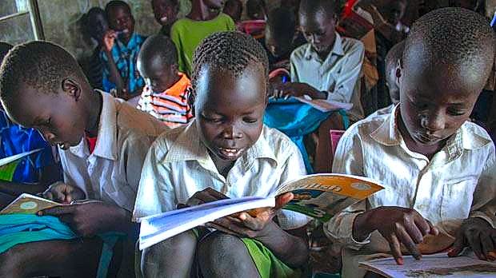
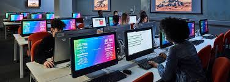

A passionate Front-end developer, aspiring back-end developer and a programmer with a strong focus on creating engaging and user-friendly web experiences. I am based in Ethiopia.
Welcome to my professional portfolio!
My name is Thep Nyuon Thep, also known as Thep Williams on Facebook and Twitter, and also Jeythiko"bb on Instagram and other platforms.
I am a passionate computer science student with a strong focus on creating engaging and user-friendly web experiences, with growing experience in coding.
I enjoy programming/coding, I code several programing languages such as Java, Python and C++.
I am a self-motivated learner who is eager to learn new things. I believe in continuos learning, consitency and improvement.
I'm currently persuing my bachelor's degree(Computer Science degree) at Gambella University in Ethiopia. I collaborate with tech enthusiasts to create innovative solutions to real-world problems.


My journey with education began when I was just Seven years old, in the heart of South Sudan, in a small town called Akobo. It was a time when attending school was more than just a routine; it was a privilege. Each day, I walked to school with the determination to learn and to grow, even in the face of challenges that could have easily held me back.
In school, I learned more than just math, reading, and writing. I learned the value of resilience. There were days when resources were scarce, but we made the most of what we had. I discovered that education is not just about acquiring knowledge but about developing a mindset that sees possibilities where others see obstacles.
I learned the importance of community. My peers and I worked together, sharing ideas, supporting each other through tough times, and celebrating our small victories. These moments taught me that true progress comes when we uplift each other.
Education, for me, has been a tool of transformation. It has shown me that no matter where you begin, you can achieve greatness if you stay motivated and never stop learning. I want to share this lesson with others: never underestimate the power of knowledge. It can open doors to opportunities you never thought possible.
I believe in God the almighty through out my educational journey, he's been my source of knowledge and wisdom Today, I continue my journey, not just for myself but to inspire others to embrace the transformative power of education. No matter how tough the road gets, remember that every challenge you overcome is a step closer to your dreams.